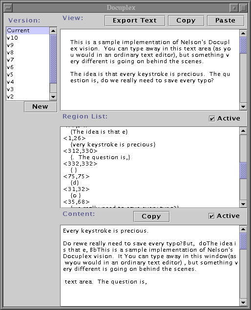

Docuplex: a partial demonstration of Nelson's vision
What is it?
A small Java application that simulates the Docuplex interface as described by Ted Nelson in Section 2.3 of Literary Machines.
What is it not?
A full-featured text editor. You can export the text you produce with Docuplex, but that is about it.
Where can I get it?
--Windows download: docuplex.zip
--Unix/Linux/OSX download: docuplex.tar.gz
What do I need to run it?
Docuplex requires Java 1.2 or later.
(You must be able to type "java" at the command prompt without error to run Docuplex.)
How do I run it?
Download and extract Docuplex. In the "docuplex" directory, run runDocuplex.bat (for Windows) or runDocuplex (for Unix/Linux/OSX). This script will launch Docuplex.
If you get an error when running these scripts, make sure Java 1.2 is installed. Try running java -version to check.

How do I use it?
Docuplex presents you with three text areas: View, Region List, and Content.
View is the only text area you can type in. The changes you make to the view will be reflected in the other two areas.
Try typing a sentence into the view. Now click into the middle of the sentence and type a few more words. Note that the "new words" are appended to the text in the Content area. Now delete the "new words" that you typed. (Note that all deletes must be performed by hitting the delete key for each character: selecting a block of text and hitting delete will not be registered correctly by Docuplex). Notice that the words you delete are still present in the Content, though they disappear from your View. Now select a block of text in the View with the mouse and click the Copy button. Position the cursor elsewhere in the View and click the Paste button. Note that the Content does not change when you copy and paste, since you are simply creating new pointers to existing content.
Content is a read-only text area. It is essentially the "document carpet" described by Nelson. Once content is indirectly added to this text area, it is permanent and cannot be deleted. New content is appended to the end of the text in this text area. By selecting text from this area and clicking the Content's Copy button, you can add content directly to the copy buffer. You can paste this content into the View by hitting the View's Paste button. Real time updating of the Content area can be disabled to speed up View typing.
Region List is a read-only text area that shows the underlying regions present in the View. Regions are pointers to portions of the content. As you edit the View, the underlying content regions change, and these changes are reflected in real time in the Region List. Real time updating of the Region List area can be disabled to speed up View typing.
How do I use the versioning features?
Click the New button to save a current version of the view. By clicking in the Version list, you can review the version history of your document. Typing into an older version will set the text from the older version as your Current version (potentially overwriting un-versioned text in Current). You can copy from older versions and paste into the Current version. Pasting into an older version will make the older text (plus what you've pasted) Current. Version v0 is a permanent "blank slate" version that you can use to paste-up bits of text from other versions. Pasting into v0 will make the pasted text Current.
How can I save?
Short answer: you can't. This is a forthcoming feature (maybe).
In the mean time, you can export the current view's text.
How do I quit?
Hit control-c in the command window that you used to launch Docuplex.
Why is this interesting?
The View interface is much like a standard text editor. However, what is going on behind the scenes is very different. Every precious keystroke is saved in the Content area as part of the ever-growing "document carpet". Copying and pasting does not replicate content, but merely creates new pointers to the existing content.
Where do I get the source?
The source code is included with the download. You can also obtain the latest source through CVS from the hypertext SourceForge project.
Whose fault is this?
Docuplex was coded in a single afternoon by Jason Rohrer. Other related hypertext projects are available at hypertext.sourceforge.net.